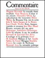
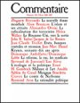

Mensuel critique d'information et d'analyses

Mais que veut Xi Jinping ?
Jean-Louis Rocca, octobre 2017
Le Congrès du Parti communiste chinois, qui réunit 2 270 délégués venus de tout le pays, s'ouvre le 18 octobre à Pékin. Les commentateurs ont souvent mis en avant l'emprise autoritaire du président Xi Jinping, certains parlant même de «nouveau Mao Zedong ».
C'est ainsi que les paysans survivent
David Bealsey, octobre 2017
Et s l'on refondait le droit du travail...
Alain Supiot, octobre 2017
Et s l'on refondait le droit du travail...
Régis Debray, août 2017

Le complotisme de l'anticomplotisme
Frédéric Lordon, octobre 2017
L'image est familière : en haut, des gens responsables se soucient du rationnel, du possible, du raisonnable, tandis que ceux d'en bas, constamment ingrats, imputent à leurs dirigeants une série de malveillances. Mais l’obsession du complot ne relève-t-elle pas (...) —

En Kiosques : octobre 2017
Et si l’on refondait le droit du travail… Dossier 1917 : la révolution russe en questions ; négocier sans préalable avec Pyongyang ; une certaine idée de la France ; le complot des anticomplotistes ; au Portugal, la gauche essaye ; Cuba veut le marché… sans le capitalisme ; improbable justice internationale en Syrie ; akhal-téké, ce cheval qui incarne une nation ; l’agriculture pour mieux voter ? Actes Sud, tout un roman ; classe sans risque (…)

Cuba, étonnante usine à cerveaux
Romain Ligneul, octobre 2017
Des magasins vides, peut-être, mais des cerveaux pleins. Sans commune mesure avec celles des autres pays en voie de développement, les institutions scientifiques de (… —
La société catalane se rallie à l'indépendance
Jean-Sébastien Mora, octobre 2013
Tentations séparatistes en Europe
Cécile Marin, avril 2017
Etats en miettes dans l'Europe des régions
Paul Dirkx, novembre 2014

Le socialisme de l’uppercut
Olivier Pironet, octobre 2017
On ne compte plus les tîtres amassés par Cuba sur le plan sportif depuis les années 1960. L'île détient notamment le record de médailles olympiques par rapport au nombre d'habitants, et la qualité de ses athlètes fait office de référence dans le monde entier. Cette réussite n'a rien de miraculeux. Elle repose sur un système sportif structuré et une politique de formation rigoureuse.
Bataille africaine en ordre dispersé pour la direction de l’Unesco
blogs · Sabine Cessou, 10 octobre 2017
Un premier tour de scrutin à bulletin secret des 58 membres du Conseil exécutif de l'Unesco, auguste agence onusienne sise à Paris, a départagé lundi 9 octobre les neuf (...) —
Macron ou le service de la classe
blogs · Frédéric Lordon, 3 octobre 2017

Le TNP, un traité à géométrie variable
Cécile Marin, octobre 2017
Classe sans risque
Richard V. Reeves, octobre 2017
Trop souvent, les débats sur les inégalités sociales restent focalisés sur les 1 % d’Américains les plus fortunés, comme si les 99 % du « bas » formaient un groupe homogène. L’attention obsessionnelle prêtée au faste des super-riches permet aux élites jouissant d’une (...) →

L’extension du domaine du marché
Laura Raim, septembre 2016
En finir avec le franc CFA ?
blogs · Anne-Cécile Robert, 29 septembre 2017
Le mouvement de protestation contre le franc CFA s’étend en Afrique francophone. Des manifestations réunissant plusieurs (...) →
L’Europe en retard d’une guerre industrielle
Jean-Michel Quatrepoint, juin 2017

Une certaine idée de la France
Jean de Gliniasty, octobre 2017
Le socialisme selon Che Guevara
Michael Löwy, octobre 2007
Faites vos jeux
Andrew Adonis & Stephen Pollard, août 2016
Comment Monsanto vend les OGM
Agnès Sinaï, juillet 2001

EN KIOSQUES
« Le jeune Karl Marx », un biopic matérialiste
blogs · Frédéric Monferrand, 26 septembre 2017
Après Patrice Lumumba et James Baldwin, Raoul Peck met (...) →

Devenez lecteur/acteur de votre journal : rejoignez les Amis du Monde diplomatique, et découvrez Zinc, le réseau social des Amis.

DERNIÈRES CARTES

Figures cubaines
Cécile Marin, octobre 2017
👁️ aperçu

Conflits et sécheresses affament le continent noir
Cécile Marin, octobre 2017
👁️ aperçu

Séparatismes ukrainiens
Agnès Stienne, mai 2017
👁️ aperçu

Les principales chaînes mondiales d’information en continu
Cécile Marin, avril 2017
👁️ aperçu
MANIÈRE DE VOIR, EN KIOSQUES
Cuba, ouragan sur le siècle
« Manière de voir » #155, octobre – novembre 2017
« Il faut que les Cubains gagnent ou que nous perdions tout, même l’espoir », a écrit Jean-Paul Sartre en 1960. Près de soixante ans plus tard, où en est l’île qui a bouleversé le XXᵉ siècle ? Pour répondre à cette question, « Manière de voir » propose une plongée dans les archives du « Monde diplomatique », sans doute l’une des publications qui a le plus attentivement suivi la révolution cubaine, documentant ses réussites comme ses échecs. Changer sans se perdre, le défi cubain ?
Disponible dans la boutique en ligne
LES LIVRES DU MOIS
Chaque mois, des dizaines de notes de lecture en accès libre...


...ainsi qu'une large sélection de revues.
 



Tous les livres du mois / toutes les revues du mois / toutes les revues
DANS LES BLOGS

Bataille africaine en ordre dispersé pour la direction de l’Unesco
S. C., 10 octobre 2017 ↑ mots d’Afrique
Un premier tour de scrutin à bulletin secret des 58 membres du Conseil exécutif de l’Unesco, auguste agence onusienne sise à Paris, a départagé lundi 9 octobre les neuf candidats qui (...)

Le service de la classe
F. L., 3 octobre 2017 ↑ la pompe à phynance
Comment se peut-il qu’une élection de classe tranchée comme jamais livre ainsi une politique de classe tranchée comme jamais ? Heureusement « conseiller » de l’Élysée vient nous sortir (...)

L’élection ou la rue
Alain Garrigou, 1er octobre 2017 ↑ régime d’opinion
C’est un de ces débats dont on ne sait si la récurrence est affligeante — tant elle exhibe l’ignorance ou la mauvaise foi — ou si elle est rassurante dès lors que la démocratie ne (...)
Quelle justice pour le quai de Valmy ?
F. L., 29 septembre 2017 ↑ la pompe à phynance
Texte de l’intervention au rassemblement de soutien aux prévenus du Quai de Valmy, le 27 septembre 2017. →
DERNIÈRES ARCHIVES PUBLIÉES
Ubu règne sur l’université française
Alain Garrigou, septembre 2017
Des élèves en quête d’université, des professeurs exaspérés, des facultés au bord de l’asphyxie… On ne peut pas dire que la rentrée s’annonce sous les meilleurs auspices. Pour diminuer les (...) →
Les sociaux-démocrates allemands sans boussole
William Irigoyen, juillet 2017
Au-delà des déboires électoraux du Parti social-démocrate allemand et de ses alliances acrobatiques, le noyau même de son idéologie paraît désintégré. Dans les municipalités, les militants (...) →
C’est la faute au juge !
A.-C. R., mai 2017
Des tensions inédites, et particulièrement vives, entre les juges et les responsables politiques auront marqué la campagne présidentielle française. Au-delà des événements particuliers (...) →
Imaginer un salariat sans subordination
Danièle Linhart, juillet 2017
Espérant amadouer les opposants à sa réforme du code du travail, le gouvernement a planifié pas moins de quarante-huit réunions avec les syndicats d’ici à septembre. Mais consulter n’est (...) →
Explorez les archives par thèmes, par date, ou visitez la page dédiée